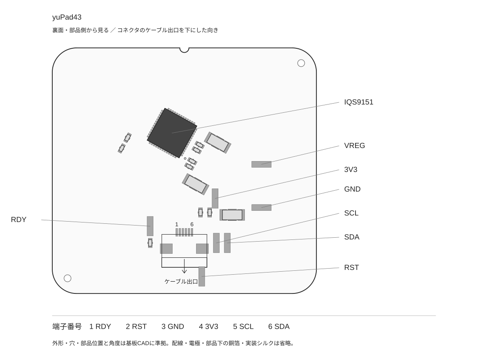
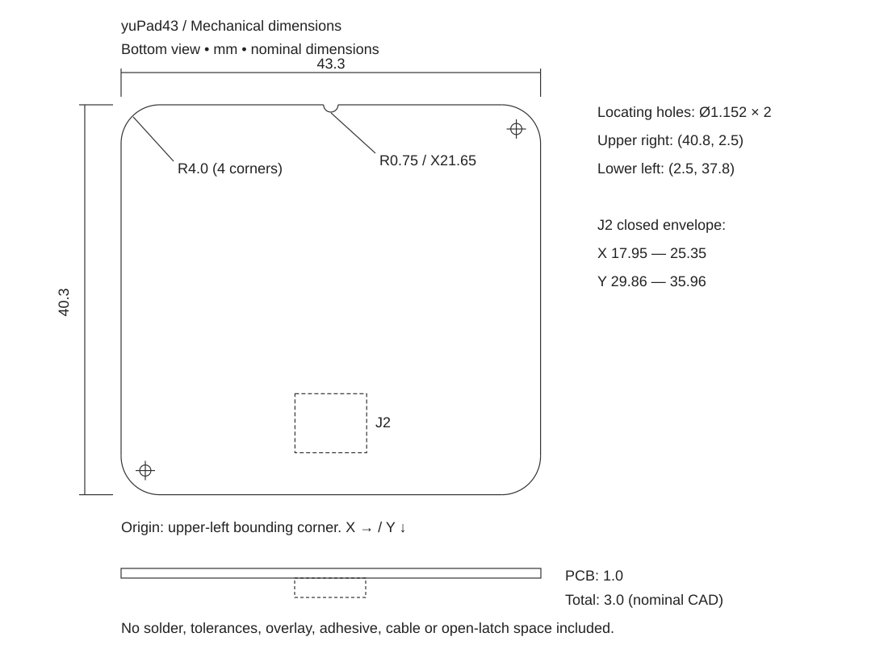

IQS9151 / 10 RX × 9 TX / 組込み資料案 v0.3 — 2026-11-11
yuPad43
接続・ファーム組込みガイド
yuPad43を自作キーボードやマイコンへ組み込むための資料です。接続ピン、起動時の設定、読み取れるデータ、ZMKの導入例をまとめています。基板の回路図・配線・電極図・製造データは含みません。
対象はIQS9151搭載の単板4層・10 RX × 9 TX版です。旧13 × 12版、2枚重ね版、CoreX用パッドには適用しないでください。TPS43を基準にした外形・コネクタ配列と、純正TPS43の通信仕様は別です。純正TPS43用ドライバの無変更での動作は保証していません。
1. 接続・裏面図
部品のある裏面を見て、コネクタのケーブル出口を下にした図です。1〜6は基板コネクタのはんだ端子番号です。ケーブルを反対側から見た番号とは区別してください。図は部品位置の案内用で、寸法・加工用ではありません。

| 端子 | 信号 | ホストとの接続 |
|---|
| 1 | RDY | GPIO入力。LowのときICが通信可能。 |
| 2 | RST / MCLR | Lowでリセット。使用しない場合は開放。GND固定にしない。 |
| 3 | GND | ホストGND。 |
| 4 | 3V3 | 3.3 V電源。5 Vを接続しない。 |
| 5 | SCL | I²Cクロック。 |
| 6 | SDA | I²Cデータ。 |
基板上ではSCL・SDA・RDYをそれぞれ4.7 kΩで3.3 Vへ、MCLRを10 kΩで3.3 Vへプルアップしています。追加のプルアップは既存回路との並列抵抗を考慮してください。VREGパッドはIC内部電源の確認用で、外部への給電には使いません。
コネクタはAFC01-S06FCA-00、0.5 mmピッチ・6ピンです。ケーブルの「Type A/B」だけで接続を決めず、相手コネクタの接点面と両端の信号対応を確認してください。PAW配列とは電源位置が異なります。電源を切ってから抜き差ししてください。
寸法・ケース設計
以下はyuPad43の板厚1.0 mm版の設計値です。寸法図は裏面を見て、ケーブル出口を下にした向き。左上の外接矩形の角が原点で、Xは右、Yは下へ増えます。表側から見た図とは左右が反転します。

| 項目 | 設計値・意味 |
|---|
| 外形 | 43.3 × 40.3 mm。TPS43公称43 × 40 mmと同寸ではありません。 |
| 板厚 | 1.0 mm、公称。4層FR-4。 |
| 四隅 | R4.0 mm。 |
| 上辺中央の切欠き | 半径0.75 mmの半円。中心X=21.65、Y=0。 |
| 位置決め穴 | 直径1.152 mm × 2。裏面視で中心（40.8, 2.5）、（2.5, 37.8）。ねじ締結用として設計・強度保証した穴ではありません。 |
| コネクタ位置 | 中心線X=21.65。CAD上の部品原点Y=31.6。原点はケーブル入口や部品の外形中心ではありません。 |
| コネクタの公称包絡 | X=17.95〜25.35、Y=29.86〜35.96。幅7.4 × 奥行6.1 mm。モデル下端から基板下辺まで4.34 mm。 |
| 部品側の突出高さ | 公称モデルでは最大2.0 mm（コネクタ）。IC 0.75 mm、大きいコンデンサ1.6 mm、小さいコンデンサ0.5 mm、抵抗0.35 mm。 |
| 基板＋部品の厚さ | 公称モデルで3.0 mm。オーバーレイ、接着材、はんだ高さ、公差は含みません。 |
ケース検討用STEPは、実基板の外形・位置決め穴と、部品の外接直方体で構成しています。配線・電極・ビアは含みません。Z=0がタッチ面、基板はZ=0〜1、部品はZ=1〜3です。部品の直方体は公称CADに基づく逃げ検討用で、最大公差込みの保証包絡ではありません。IC・コネクタは簡略モデル、受動部品は汎用モデルに由来します。
ケース側に残す余裕
基板と同じ43.3 × 40.3 mmのポケットへ隙間なく押し込む設計は避けます。試作開始値として片側0.3 mmの隙間なら、外接寸法は43.9 × 40.9 mmです。ただしこれはFDMや基板製造の誤差を保証する値ではなく、実際のプリンタ・実基板・切り離し後のバリで確認してください。角も元外形をオフセットして逃がします。
高さは「カバー厚＋接着材または隙間＋基板1.0 mm＋部品側の必要空間＋組立余裕」で決めます。部品側は公称2.0 mmに余裕を加え、ケースでコンデンサやコネクタを押さえないでください。部品のない部分を使った連続した受け面で支持し、基板がたわまないようにします。
カバーとケーブル
オーバーレイの材質・厚さはケース設計に合わせて選び、実際の積層状態で感度を確認します。金属や導電性塗装でタッチ面を覆う前提にはしません。密着状態と厚さが局所的に変わらない取り付けにしてください。筐体やカバーを取り替えた場合は同じ設定で体験が維持されるかを再確認します。
コネクタは0.5 mmピッチ、6ピン、下接点、適合FFC/FPC厚0.3 mmの製品です。ラッチの開閉、ケーブル補強板、抜き差しする指・工具の空間を別に確保します。STEPにはラッチ開状態・ケーブル・曲げ空間を含めていません。基板端まで4.34 mmあることは、全ケーブルをそこで折り曲げられる意味ではありません。補強板を無理に曲げず、採用ケーブルの図面と実物で経路を確認してください。
外形・穴・部品包絡の寸法JSONも同梱しています。公称寸法とケース用の余裕は分離して記録してあります。
2. ZMKで使う
同梱の firmware/zmk-driver は、このパッド用の設定とATI通信修正を含む、2026-10-30の保存版です。上流モジュールを登録するだけでは、この基板固有のRX/TXマップは適用されません。
firmware/xiao-example にXIAO nRF52840用のshield、conf、keymap、west.ymlを収録しています。基準はZMK v0.3.0です。別キーボードへの移植ではI²CバスとGPIOを変更し、ホスト側に既存のinput-listenerがある場合は二重登録を避けてください。
| 実機確認時のXIAO配線 | GPIO |
|---|
| SDA | P0.16 |
| SCL | P1.00 |
| RDY | P1.10（active-low） |
| RSTの配線先 | P1.11 / D6。保存版はソフトリセットを使用し、reset-gpiosによる駆動はしていません。 |
この例は標準のD4/D5 I²C配線ではありません。P1.11と競合するUART0を無効にしています。キーマップのD0〜D2は未割当です。
west build -s zmk/app -b xiao_ble -d build/yupad43 -- \
-DSHIELD=yupad43_test \
-DZMK_CONFIG=/absolute/path/to/yuPad43/firmware/xiao-example \
-DZMK_EXTRA_MODULES=/absolute/path/to/yuPad43/firmware/zmk-driver
上記はZephyr SDKとwestの依存取得が済んだ環境での指定例です。今回の資料作成では新環境での再ビルドは実施していません。USB用の例はBLE無効です。BLE対応を有効にするだけで販売対象として検証済みになるわけではありません。
XIAOのUSB起動について、shield内のKconfig.defconfigでUSBの自動初期化を抑制しています。この修正を落とすとUSB状態通知が正常に登録されない既知の問題がありました。ZMK本体のUSB送信条件を迂回するパッチは不要です。
3. ZMK以外へ組み込む
RMK・QMK・独自ファームでは、I²C/GPIO/待機処理と、ホストへ送るマウス・スクロール処理を用意します。パッド自身がUSB HIDを直接出力する構成ではありません。
yuPad43-profile.json に初期化ブロック・RX/TXマップ・設定上書きを収録しました。register-writes.csv は基礎ブロックのアドレス別一覧です。CSVだけでは上書き、リセット、校正、通信制御が不足します。
| 基準値 | 設定 |
|---|
| I²Cアドレス | 0x56（7bit表記） |
| 製品番号 | 0x1000から読み、0x09BCを確認 |
| I²C速度 | 100 kHz（実機確認に使用した設定） |
| アドレス・16bit値 | いずれもLittle-endian |
| RX / TX | 10 / 9。マップはJSONを使用 |
| 座標解像度設定 | X=1300、Y=1192。実測の端到達範囲やDPIを意味しません |
| ATI目標 / タッチ閾値 | 400 / 開始30・解除26。CoreX用24/22と混同しない |
| ALP / SW_IN | 無効。TX45を電極に使用 |
通信の約束
RDYが物理Lowになった通信窓でアクセスします。読み出しはレジスタアドレス2バイトを送った後、Repeated STARTで読み、最後にSTOPを送ります。例：0x1014を読むアドレスバイトは 14 10 です。GPIOライブラリの「active-low論理値」と実際のLowを取り違えないでください。
STOPで通信窓を閉じる設定です。STOP後に続けて別レジスタへアクセスする場合は、新しい通信窓を待ちます。設定書込みを分割する場合も同様です。保存ドライバは最大30バイト単位で書き込みます。無応答や時間切れのデータを正常フレームとして扱わないでください。
起動処理の順番
- 電源とRDYを確認し、製品番号を読みます。
- リセット処理とShow Resetの確認を行い、System ControlのAck Reset（bit7）で通知を解除します。
- JSONのbase_write_blocksを順番に書き、その後post_write_overridesを反映します。rotationの処理は他のビットを保持したread-modify-writeです。
- TP Re-ATI（0x11BCのbit5）を要求します。初期値0からならデータは
20 00 です。稼働中は他ビットを保持します。 - ATI中は通信可能になるまで待ち、期限内にRDYと完了状態を確認します。完了後はInfo FlagsのATI error（bit3）を別に確認します。
- 通常フレームを読み、指の検出と移動をホストの入力イベントへ変換します。
ATI完了とATI品質の合格は別です。ATI errorは補正値の上下限への到達や、完了直後にCountが再校正範囲外だったことを示します。断線箇所の番号ではありません。動作中にShow Resetが再び立った場合は設定の再適用を含む復旧処理が必要です。保存ドライバはこの復旧と一般RDYタイムアウト処理に未整備部分があります。
スクロール専用化なら検出済みの移動量をホイールへ積算し、少量の移動を整数丸めで捨てないよう残量を保持します。タップや2本指ジェスチャの割当て・有効化はホスト側の実装で決めます。CoreXでのRMK動作実績を、このyuPad43版のRMK検証済みとは扱っていません。
4. 読み取れるデータ
通常例は0x1014から28バイトを一括で読みます。これは同梱ドライバが使用する範囲です。decode_frame.py はI²Cから取得済みの28バイトを解釈する独立した例です。I²C通信やカーソル出力は含みません。
| アドレス | 形式 | 内容 |
|---|
| 0x1014 / 0x1016 | int16 / int16 | 相対X / Y移動量 |
| 0x101C / 0x101E | uint16 / uint16 | 1本指 / 2本指ジェスチャのフラグ |
| 0x1020 | uint16 | Info Flags：bit3 ATI error、bit7 Show Reset |
| 0x1022 | uint16 | Trackpad Flags：bit0〜3 指数、bit8/9 指1/2のconfidence |
| 0x1024 / 0x1026 | uint16 / uint16 | 指1 X / Y |
| 0x1028 / 0x102A | uint16 / uint16 | 指1の信号強度 / 面積 |
| 0x102C / 0x102E | uint16 / uint16 | 指2 X / Y |
指が離れたフレームの座標を新しいタッチとして使用しないでください。指の数とconfidenceを併せて扱い、移動量は符号付きで読みます。信号強度は押圧のニュートン値ではありません。座標の上下左右は装着方向に応じて反転・入替えし、実物を右・下へなぞって確認します。
通常のカーソルやスクロールには電極ごとの値は不要です。検査用にはCount・Reference・Deltaの10×9マトリクスを別途読み出せますが、通常フレームとは別レジスタです。取得頻度が操作遅延へ影響するため、常用ファームと検査モードを分けます。
5. 確認済みの範囲と販売前の調整
基準のATI通信修正版はXIAO nRF52840・USBで「前と同じように動く」と実機確認されています。USB起動修正版では抜き差し後の動作も確認されています。後の診断版ではATI errorと触り始めの鈍さが記録されており、校正品質・複数個体での出荷判定は確定していません。この資料はその制限を含む組込み用の基準版です。
- 各個体で製品番号、設定の読み戻し、ATI完了・ATI errorを確認する。
- 同じカバー・同じ密着状態で、軽い触り始め、中央・辺・四隅、指を離した後の停止を確認する。
- 電源再投入、USB再接続、ホスト復帰、ICリセット後の復旧を確認する。
- ZMK以外は同じプロフィールで座標取得まで合わせてから、ホスト側のスクロール量や加速を調整する。
表面材を変更した場合、まずタッチ閾値を調整します。ATI目標は感度の強弱や製品の優劣を表す数字ではありません。初期化・校正・座標・USB/BLE出力を一度に変更せず、比較できる状態を保存してください。
6. 収録物と一次資料
Azoteq IQS9150/IQS9151データシート：通信は12章、ATIは5.8.3、出力はAppendix Aを参照。今回照合したローカル資料はv1.2です。このパッドには同梱プロフィールを使用してください。
使用ソフトウェア・ライセンス
同梱のZMK用ドライバは、ShiniNet / zmk-driver-iqs9151（MIT License）を基に、このパッド向けの電極設定・初期化設定・ATI通信処理を変更しています。
Copyright (c) 2026 ShiniNet
ライセンス全文は THIRD-PARTY-LICENSE.txt に収録しています。